PREDATORS
| Photo |
Name |
Number |
Position |
Shot |
Height |
Weight |
Birthday |
Hometown |
|
Viktor Arvidsson |
33 |
LW |
R |
5' 9" |
180 |
Apr 8, 1993 |
Skellefteå, SWE |
| 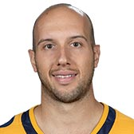 |
Nick Bonino |
13 |
C |
L |
6' 1" |
196 |
Apr 20, 1988 |
Hartford, CT, USA |
| 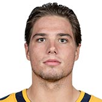 |
Kevin Fiala |
22 |
LW |
L |
5' 10" |
193 |
Jul 22, 1996 |
St. Gallen, CHE |
|
Filip Forsberg |
9 |
LW |
R |
6' 1" |
205 |
Aug 13, 1994 |
Ostervala, SWE |
|
Frederick Gaudreau |
89 |
C |
R |
6' 0" |
179 |
May 1, 1993 |
Bromont, QC, CAN |
| 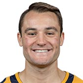 |
Rocco Grimaldi |
23 |
C |
R |
5' 6" |
180 |
Feb 8, 1993 |
Anaheim, CA, USA |
| 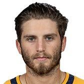 |
Ryan Hartman |
38 |
RW |
R |
6' 0" |
181 |
Sep 20, 1994 |
Hilton Head Isl., SC, USA |
| 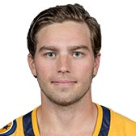 |
Calle Jarnkrok |
19 |
C |
R |
5' 11" |
186 |
Sep 25, 1991 |
Gävle, SWE |
| 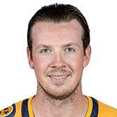 |
Ryan Johansen |
92 |
C |
R |
6' 3" |
218 |
Jul 31, 1992 |
Vancouver, BC, CAN |
| 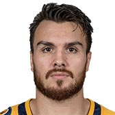 |
Zac Rinaldo |
36 |
C |
L |
5' 10" |
192 |
Jun 15, 1990 |
Mississauga, ON, CAN |
| 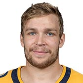 |
Miikka Salomaki |
20 |
RW |
L |
5' 11" |
203 |
Mar 9, 1993 |
Raahe, FIN |
| 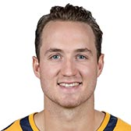 |
Colton Sissons |
10 |
C |
R |
6' 1" |
200 |
Nov 5, 1993 |
North Vancouver, BC, CAN |
|
Craig Smith |
15 |
RW |
R |
6' 1" |
208 |
Sep 5, 1989 |
Madison, WI, USA |
| 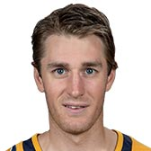 |
Kyle Turris |
8 |
C |
R |
6' 1" |
190 |
Aug 14, 1989 |
New Westminster, BC, CAN |
|
Austin Watson |
51 |
LW |
R |
6' 4" |
204 |
Jan 13, 1992 |
Ann Arbor, MI, USA |
| Photo |
Name |
Number |
Shot |
Height |
Weight |
Birthday |
Hometown |
| 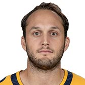 |
Anthony Bitetto |
2 |
L |
6' 1" |
210 |
Jul 15, 1990 |
Island Park, NY, USA |
|
Mattias Ekholm |
14 |
L |
6' 4" |
215 |
May 24, 1990 |
Borlange, SWE |
|
Ryan Ellis |
4 |
R |
5' 10" |
180 |
Jan 3, 1991 |
Hamilton, ON, CAN |
| 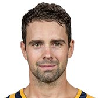 |
Dan Hamhuis |
5 |
L |
6' 1" |
204 |
Dec 13, 1982 |
Smithers, BC, CAN |
| 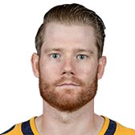 |
Matt Irwin |
52 |
L |
6' 1" |
207 |
Nov 29, 1987 |
Victoria, BC, CAN |
| 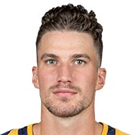 |
Roman Josi |
59 |
L |
6' 1" |
201 |
Jun 1, 1990 |
Bern, CHE |
| 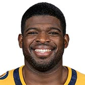 |
P.K. Subban |
76 |
R |
6' 0" |
210 |
May 13, 1989 |
Toronto, ON, CAN |
|
Yannick Weber |
7 |
R |
5' 11" |
200 |
Sep 23, 1988 |
Morges, CHE |
| Photo |
Name |
Number |
Height |
Weight |
Birthday |
Hometown |
|
Pekka Rinne |
35 |
6' 5" |
217 |
Nov 3, 1982 |
Kempele, FIN |
|
Juuse Saros |
74 |
5' 11" |
180 |
Apr 19, 1995 |
Forssa, FIN |